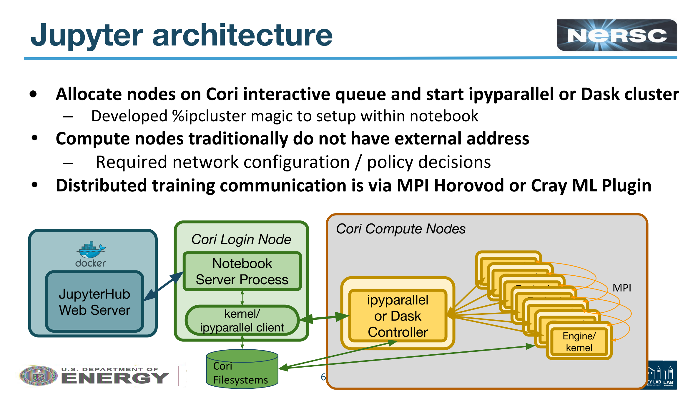
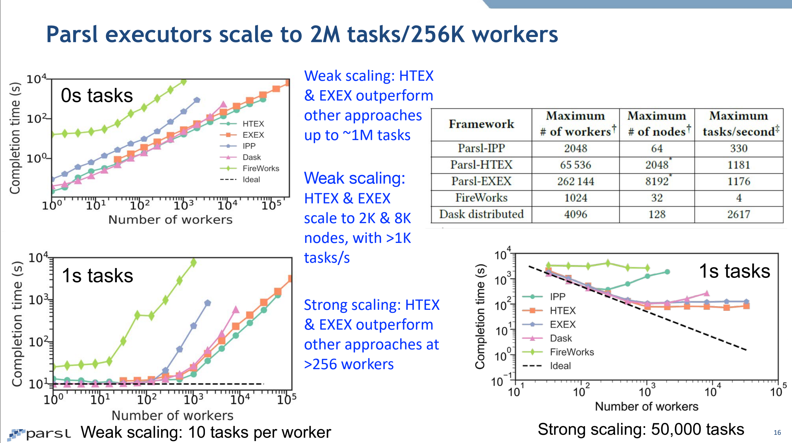
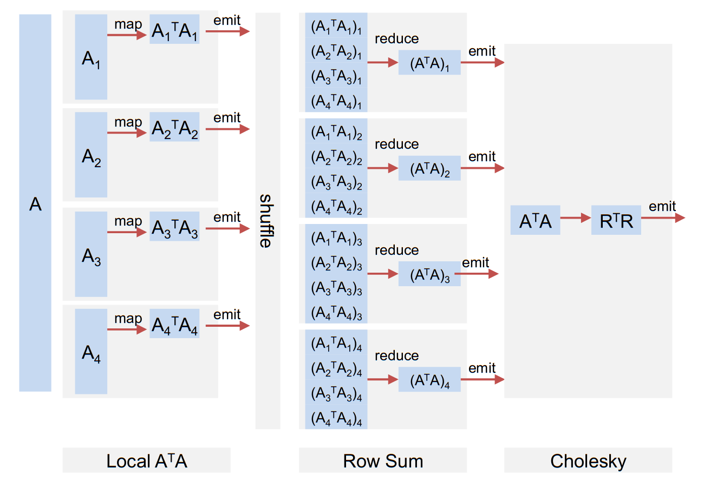
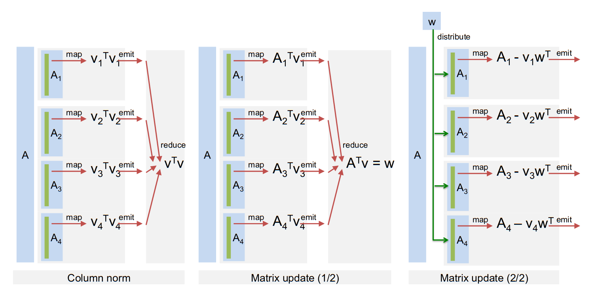
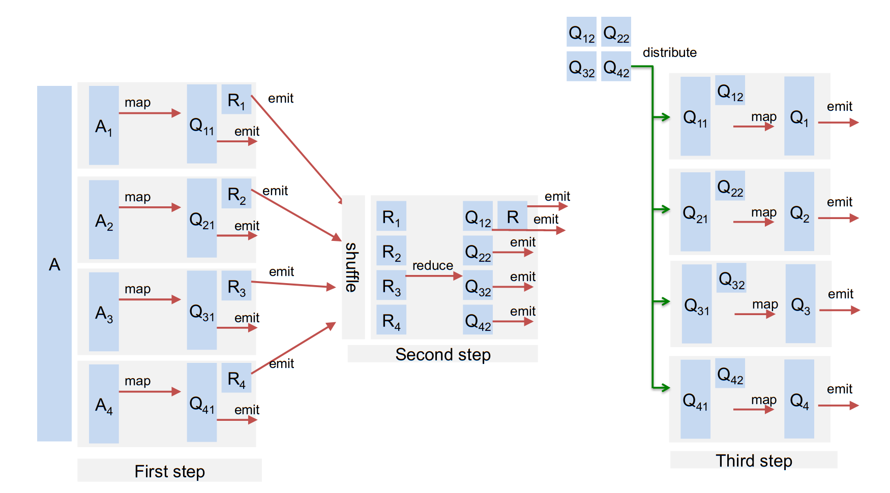
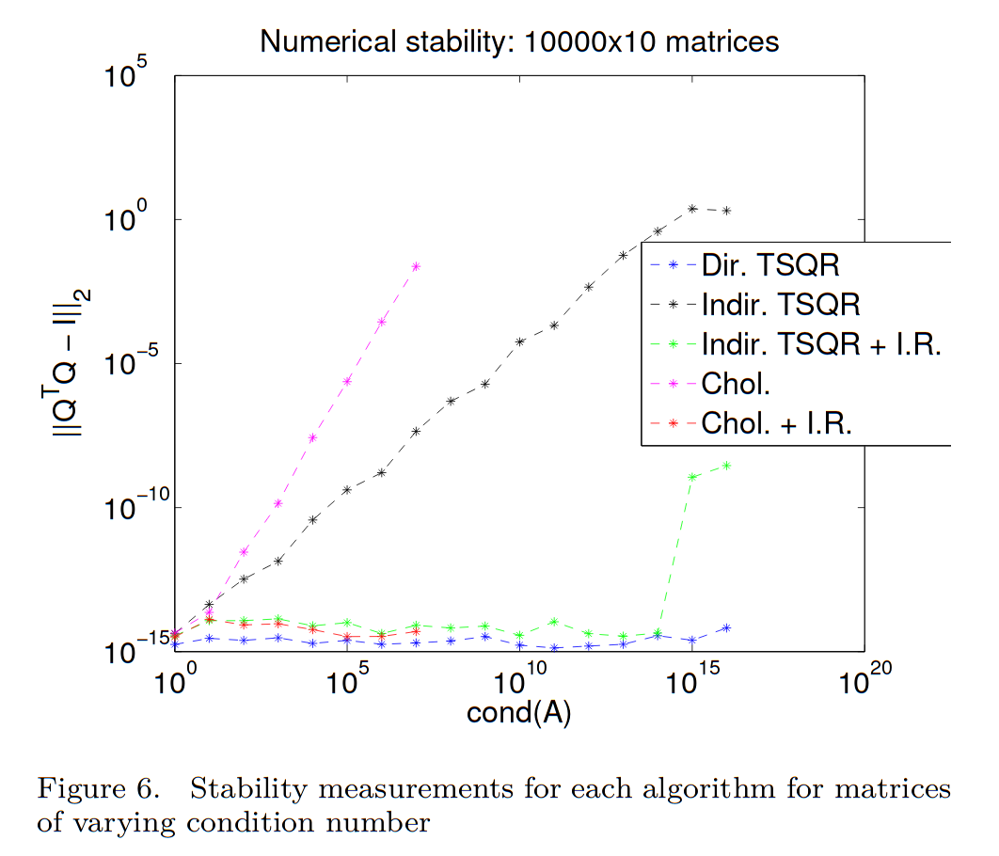
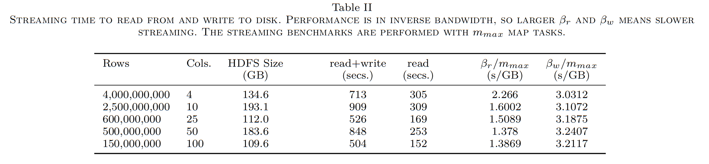
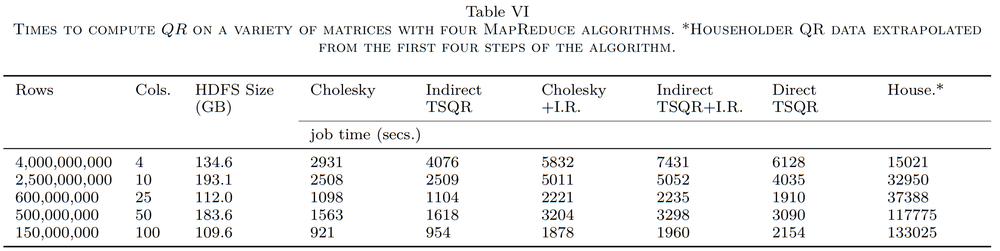
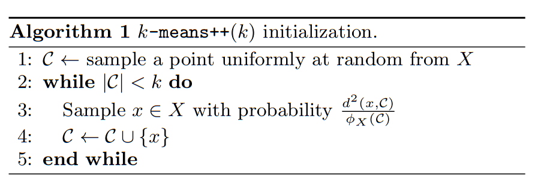
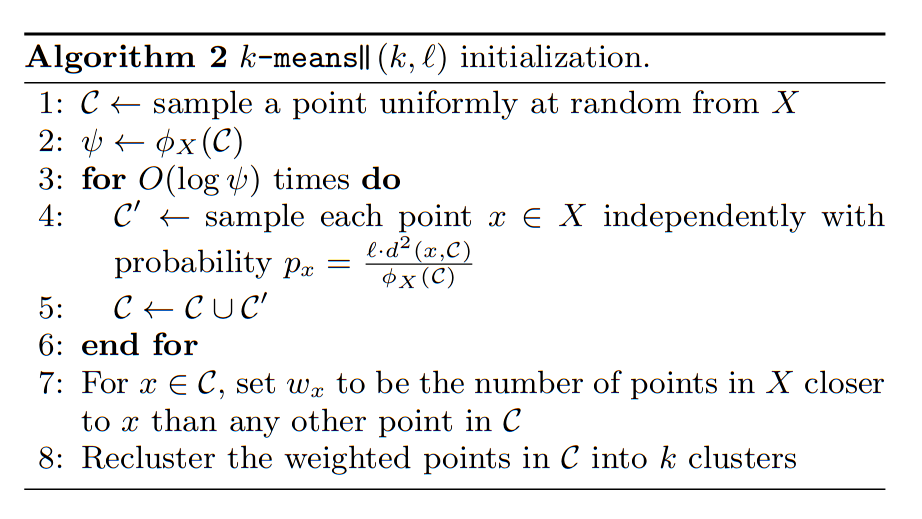

Interactive Parallelism
- Batch parallelism (e.g., MPI)
- Computation more expensive than data load/store
- Thinking up-front to maximize efficiency
- Scalable and low-latency
- Interactive/exploratory analysis
- Don’t know the question until seeing data
- Iterative exploration
- Some analyses are cheap, others are expensive
- Data load/store and preprocessing expensive compared to (some) analysis
- Modest scale (single node to perhaps dozens of hundreds of nodes for the right problem)
Example platforms
- Hadoop
- Reliable MapReduce system with disk-based storage and replication for fault tolerance
- Java with bindings for other languages
- Spark
- In-memory child of Hadoop

- In-memory child of Hadoop
- Dask
- Python-based platform that integrates with NumPy, SciPy, Pandas, and Scikit-Learn
- Lead developer employed by NVIDIA
- IPyParallel
- Control-worker design
- Can use MPI
- Expressive parallel algorithms
- A bit flaky, especially after error conditions (in my experience)
- On NERSC’s Cori 
-
- Slides 
Workshop: Jupyter for Science User Facilities and High Performance Computing
Dask notes
Distributed API operations are lazy, returning futures. Computation actually occurs when you ask for .result() (gathers result locally) or call .persist() to start computing a distributed result.
Overhead
Partitions should fit comfortably in memory (smaller than a gigabyte) but also not be too many. Every operation on every partition takes the central scheduler a few hundred microseconds to process. If you have a few thousand tasks this is barely noticeable, but it is nice to reduce the number if possible.
df = dd.read_csv('s3://bucket/path/to/*.csv')
df = df[df.name == 'Alice'] # only 1/100th of the data
df = df.repartition(npartitions=df.npartitions // 100)
df = df.persist() # if on a distributed system
- https://docs.dask.org/en/latest/dataframe-best-practices.html
- https://distributed.readthedocs.io/en/latest/limitations.html
Keeping data distributed
https://distributed.readthedocs.io/en/latest/efficiency.html
from dask.distributed import Client
client = Client()
client
Client
|
Cluster
|
import numpy as np
x = client.submit(np.random.random, (1000, 1000))
x
Future: random status: pending, key: random-4fead107d39a451af48ce8db919b0254
x
Future: random status: finished, type: numpy.ndarray, key: random-4fead107d39a451af48ce8db919b0254
x.result().shape # Moves data to control process, then computes shape
(1000, 1000)
client.submit(lambda a: a.shape, x).result()
(1000, 1000)

QR factorization
Indirect approach: compute $R$, then $Q = A R^{-1}$
$$ R^T R = A^T A $$

“Direct” Householder $QR = A$
Operates one column at a time; inefficient parallel distribution and memory access.

Direct TSQR


| Name | Value |
|---|---|
| Nodes | 10 |
| Processor | i7-960 |
| Memory/node | 24 GB |
| Total memory | 240 GB |
| Memory BW/node | 25 GB/s |
| Cores/node | 4 |
| Clock | 3.2 GHz |
| flops/cycle/core | 2 |
| GF/s/node | 25.6 |
| flops/byte | 1 |

import pandas
df = pandas.DataFrame(dict(rows=[4e9, 2.5e9, .6e9, .5e9, .15e9], cols=[4,10,25,50,100]))
df['bytes'] = 8 * df.rows * df.cols
df['flops'] = 2 * df.rows * df.cols**2
bandwidth = 125e9 # 50% of peak
flops = 256e9 * .2 # 20% of peak
df['sec_mem'] = df.bytes / bandwidth
df['sec_flops'] = df.flops / flops
df
| rows | cols | bytes | flops | sec_mem | sec_flops | |
|---|---|---|---|---|---|---|
| 0 | 4.000000e+09 | 4 | 1.280000e+11 | 1.280000e+11 | 1.024 | 2.500000 |
| 1 | 2.500000e+09 | 10 | 2.000000e+11 | 5.000000e+11 | 1.600 | 9.765625 |
| 2 | 6.000000e+08 | 25 | 1.200000e+11 | 7.500000e+11 | 0.960 | 14.648438 |
| 3 | 5.000000e+08 | 50 | 2.000000e+11 | 2.500000e+12 | 1.600 | 48.828125 |
| 4 | 1.500000e+08 | 100 | 1.200000e+11 | 3.000000e+12 | 0.960 | 58.593750 |

Notes
- The data always fits in (distributed) memory
- Limited by flops for all numbers of columns
- What about on today’s computers?
- Using disk and the present algorithm is tens to hundreds of times slower than an efficient in-memory algorithm.
- The many passes over data in (unblocked) Householder is crippling
- Direct TSQR and Cholesky QR with refinement are good algorithms
K-means clustering
Given $n$ points $x_i$ in $d$-dimensional space, the k-means algorithm finds $K$ clusters by 1. Initialize centers ${ ck \in R^d }{k=1}^K $ 2. Repeat (Lloyd’s algorithm) * Assign each $x_i$ to the nearest center $c_k$ * Shift each center $c_k$ to the mean (centroid) of its $x_i$
This minimizes the cost function
$$ \phi(\mathcal C) = \sum_{x\in X} \min_k \lVert x - c_k \rVert^2 $$
 By Chire - Own work, CC BY-SA 4.0, Link
By Chire - Own work, CC BY-SA 4.0, Link
Initialization matters
K-means++ defines a seeding strategy which is approximately optimal up to a logarithmic factor. Running k-means afterward only marginally improves the quantization error (as opposed to bad seeding). https://t.co/L8w45IE9gV pic.twitter.com/7DtaTZukTU
— Gabriel Peyré (@gabrielpeyre) November 13, 2019
Serial kmeans++ and parallel kmeans||
 